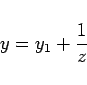
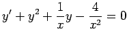
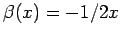

Inhalt Index DeskTop Bronstein

 Differentialgleichungen Gewöhnliche Differentialgleichungen Differentialgleichungen 1. Ordnung Wichtige Integrationsmethoden
Differentialgleichungen Gewöhnliche Differentialgleichungen Differentialgleichungen 1. Ordnung Wichtige Integrationsmethoden


RICCATIsche Differentialgleichung heißt die Gleichung
die im allgemeinen nicht durch Quadraturen gelöst werden kann, d.h. nicht durch endlich viele aufeinander folgende Integrationen. Ist aber eine partikuläre Lösung y1 der RICCATIschen Differentialgleichung bekannt, dann läßt sich diese durch die Substitution
|  | (9.13b) |
auf eine lineare Differentialgleichung für z zurückführen. Kennt man noch eine zweite Lösung , so ist
| (9.13c) |
eine partikuläre Lösung der linearen Differentialgleichung für die Funktion  , so daß sich ihre Integration vereinfacht. Sollten sogar drei Lösungen und y3 bekannt sein, dann lautet das allgemeine Integral der RICCATIschen Differentialgleichung
, so daß sich ihre Integration vereinfacht. Sollten sogar drei Lösungen und y3 bekannt sein, dann lautet das allgemeine Integral der RICCATIschen Differentialgleichung
| (9.13d) |
Durch die Substitution
| (9.13e) |
läßt sich die RICCATIsche Differentialgleichung stets in die Normalform
| (9.13f) |
überführen. Mit der Substitution
| (9.13g) |
ergibt sich aus (9.13a) eine lineare Differentialgleichung 2. Ordnung
| (9.13h) |
| Beispiel |
|
Es ist die Differentialgleichung  zu lösen. Man setzt , substituiert und erhält für den Koeffizienten der ersten Potenz von z den Ausdruck , der zum Verschwinden gebracht wird, indem man  setzt. Somit ergibt sich . Man sucht partikuläre Lösungen der Form und findet durch Einsetzen , d.h. zwei partikuläre Lösungen Die Substitution liefert . Durch Einsetzen der partikulären Lösung ergibt sich die allgemeine Lösung und hiermit |